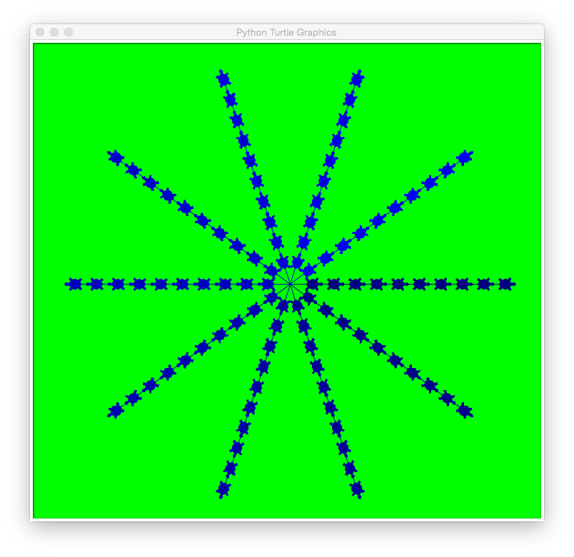

Today's lab will focus on using OpenData, top-down design with functions, and and using git from the command line.
Software tools needed: web browser and Python IDLE programming
environment with the pandas and matplotlib packages installed.
Using Python, Gradescope, and Blackboard
See the introductory lab for details on using Python, Gradescope, and Blackboard.
Binning Data: Parking Tickets

Via the NYC Open Data project, you can access data from almost every city agency. Today, we will look at the parking tickets issues by New York City. We will use a small version (1000 lines) for today's lab (see below). But you are welcome to use any neighborhood in the city. To download data for a given neighborhood (and restricted to just fiscal year 2018, since the data sets can be quite large):
- Instead of neighborhood name or zipcode, parking tickets are classified by the police precinct that issued the ticket. First, figure out the precinct (here's a useful tool).
-
Fiscal year 2018 (FY2018) parking tickets for your precinct: download the data set as a CSV, filtering by "Violation Precinct". For example, Hunter College is located in the 19th Precinct, so, you would enter 19 on the filter.
A simple, but very powerful, technique is "binning data"-- that is grouping data into the number of occurrences for each categories. The category values can often show patterns that individual data points do not. For example, binning population by zipcode can show patterns in density that's difficult to see with individual data points. Below, we will bin parking tickets by different attributes.
CSV Data Files
CSV files store tabular information in readable text files. The files downloaded above have information separated by commas (using tabs as delimiters is also common). Here is a sample line:
1335632335,L040HZ,FL,PAS,06/09/2015,46,SUBN,NISSA,X,35430,14510,15710,0,0020,20,74,921167,E074,0000,1213P,1207P,NY,O,4,WEST 83 ST,,0,408,C,,BBBBBBB,ALL,ALL,RED,0,0,-,0,,,,,
All lines are formatted similarly: they start with the
summons number, then the license plate, registration state, plate Type, date, and continue with the information about the location and type of violation, and sometimes additional information such as the who issued the ticket and the color of the car. The first line of the file gives the entries in the order they occur in the rows.
The sample entry above gives details for a ticket issues on June 9, 2015 to a passenger car with Florida plates, L040HZ. The red Nissan SUV received the ticket on West 83rd Street. Each entry also begins with a unique identifier that can be used to look up the parking ticket.
Since there were over 196,000 tickets for the FY 2016 for the 20th precinct, here is truncated version of that data, containing just the first 1000 lines: tickets.csv.
Here are some questions we can ask about the data:
- Which car got the most tickets?
- What color of car is most likely to get a ticket?
- What type of license gets the most tickets?
- Which location yields the most tickets?
For each of these questions, we can traverse the file and count the occurrences as we go.
Counting Tickets per Car
How can tell which car got the most tickets? First, we need to figure out a unique way to identify different cars. Luckily, cars almost always have license plates-- with each state having a unique number. (For this simple exercise, we'll assume that each license plate is unique on its own-- not an unreasonable assumption since every state has a different schema for assigning numbers, but to be more accurate we should keep track of license plate number and issuing state.)
Open up the CSV file and look at the columns. Which column contains the license plate number? Here's all the column names (first line of tickets.csv):
Summons Number,Plate ID,Registration State,Plate Type,Issue Date,Violation Code,Vehicle Body Type,Vehicle Make,Issuing Agency,Street Code1,Street Code2,Street Code3,Vehicle Expiration Date,Violation Location,Violation Precinct,Issuer Precinct,Issuer Code,Issuer Command,Issuer Squad,Violation Time,Time First Observed,Violation County,Violation In Front Of Or Opposite,House Number,Street Name,Intersecting Street,Date First Observed,Law Section,Sub Division,Violation Legal Code,Days Parking In Effect ,From Hours In Effect,To Hours In Effect,Vehicle Color,Unregistered Vehicle?,Vehicle Year,Meter Number,Feet From Curb,Violation Post Code,Violation Description,No Standing or Stopping Violation,Hydrant Violation,Double Parking Violation
It's the second column:
Plate ID. Scanning the CSV file, it looks like most cars got one or two tickets. How can we get the worst offenders (i.e. those cars that got the most parking tickets)?
Let's use Pandas to read in the CSV file, following the same pattern as last lab:
#CSci 127 Teaching Staff
#October 2018
#Count which cars got the most parking tickets
#Import pandas for reading and analyzing CSV data:
import pandas as pd
csvFile = "tickets.csv" #Name of the CSV file
tickets = pd.read_csv(csvFile) #Read in the file to a dataframe
print(tickets) #Print out the dataframe
Try running your program. It should print out all the information about all the tickets issued. Let's focus in on just licence plates. Change the last line of your program to be:
print(tickets["Plate ID"]) #Print out licence plates
When you run the program again, you should just see the row number and licence plate recorded for each row.
We want to refine this further to print how many tickets each car got. Pandas has a function just for counting occurrences, called value_counts(). Let's modify our last line again to use it:
print(tickets["Plate ID"].value_counts()) #Print out plates & number of tickets each got
Rerunning the program, there are a lot of cars that got only a single ticket. If you scroll back up the Python shell, you will see the cars with the most tickets are listed first. Let's just print out the 10 cars that got the most tickets. We can do this by slicing to [:10]:
print(tickets["Plate ID"].value_counts()[:10]) #Print 10 worst & number of tickets
Even with only 1000 lines of ticket information, there is a car (with plate TOPHAT5) that got more than 5 tickets.
Let's make our program a bit more general, to allow the user to enter their own file name:
#CSci 127 Teaching Staff
#October 2018
#Count which cars got the most parking tickets
#Import pandas for reading and analyzing CSV data:
import pandas as pd
csvFile = input('Enter CSV file name: ') #Name of the CSV file
tickets = pd.read_csv(csvFile) #Read in the file to a dataframe
print("The 10 worst offenders are:")
print(tickets["Plate ID"].value_counts()[:10]) #Print out the dataframe
And run it on all tickets for the 20th precinct for January 2016 (14,000 tickets):
Parking_Violations_Jan_2016.csv.
You should see output:
Enter CSV file name: Parking_Violations_Jan_2016.csv
The 10 worst offenders are:
63044JM 52
63277JM 46
63540JM 42
93503JT 36
42816JM 35
97223JE 35
62150JM 35
31420MG 32
23246MA 31
AP113R 30
Name: Plate ID, dtype: int64
For just the month of January 2016, there were 9 cars that got more than a ticket a day.
Binning Other Data
Now that you have a program to use as a basic template, answer the following questions:
- What color of car is most likely to get a ticket?
- What type of license gets the most tickets?
- Which location yields the most tickets?
(Remember to check the CSV file for the name used for the columns and use that as the index.)
Top Down Design
Functions are used to design programs and provide an elegant
way to divide work among several programmers. A standard technique,
called top-down design, consists of breaking a program into multiple
function calls (covered in more detail in Section 6.8).
Each function is written separately and then tested, before
the next function is written.

In today's lab, we will write a program to draw images using turtles. We will focus on breaking down the problem into functions, and then implementing (and testing!) each function separately. Here's a basic outline of our program:
#Intro Programming Lab: A program with a herd of turtles
import turtle
def main():
welcomeMessage() #Writes a welcome message to the shell
numTurtles = getInput() #Ask for number of turles
w = setUpScreen() #Set up a green turtle window
turtleList = setUpTurtles(numTurtles) #Make a list of turtles, different colors
for i in range(10):
moveForward(turtleList) #Move each turtle in the list forward
stamp(turtleList) #Stamp where the turtle stopped
if __name__ == "__main__":
main()
We will fill in each function, one-by-one, using the comments as guidance.
If you run the program above, you will get errors saying that it does not recognize
welcomeMessage(), since it is not pre-defined function, but instead a function that we are designing. To avoid these errors and to allow testing of each part as we write it, we will add in empty functions (often called ``stubs'') that we will fill in as we go:
#Intro Programming Lab: A program with a herd of turtles
import turtle
def welcomeMessage():
#Empty placeholder until function is defined
return()
def getInput():
#Empty placeholder until function is defined
return()
def setUpScreen():
#Empty placeholder until function is defined
return()
def setUpTurtles(num):
#Empty placeholder until function is defined
return()
def moveForward(tList):
#Empty placeholder until function is defined
return()
def stamp(tList):
#Empty placeholder until function is defined
return()
def main():
welcomeMessage() #Writes a welcome message to the shell
numTurtles = getInput() #Ask for number of turles
w = setUpScreen() #Set up a green turtle window
turtleList = setUpTurtles(numTurtles) #Make a list of turtles, different colors
for i in range(10):
moveForward(turtleList) #Move each turtle in the list forward
stamp(turtleList) #Stamp where the turtle stopped
if __name__ == "__main__":
main()
The first function should welcome the user to the program:
def welcomeMessage():
print()
print("Welcome to our herd of turtles demonstration!")
print()
Add it to the program above (replace the empty function with this one) and run it to make sure there are no typos or
errors.
Next, let's ask the user for the number of turtles. Since the function call
is on the right hand side of an equals sign, it returns a value (namely, the number
of turtles) that we will use later in the program. So, our function will ask
the user for the number and then use a return statement to send that
value back to the calling function:
def getInput():
n = eval(input("Please enter the number of turtles: "))
return(n)
When we add these in, we now have the program:
#Intro Programming Lab: A program with herd of turtles
import turtle
def welcomeMessage():
print()
print("Welcome to our herd of turtles demonstration!")
print()
def getInput():
n = eval(input("Please enter the number of turtles: "))
return n
def setUpScreen():
#Empty placeholder until function is defined
return()
def setUpTurtles(num):
#Empty placeholder until function is defined
return()
def moveForward(tList):
#Empty placeholder until function is defined
return()
def stamp(tList):
#Empty placeholder until function is defined
return()
def main():
welcomeMessage() #Writes a welcome message to the shell
numTurtles = getInput() #Ask for number of turles
w = setUpScreen() #Set up a green turtle window
turtleList = setUpTurtles(numTurtles) #Make a list of turtles, different colors
for i in range(10):
moveForward(turtleList) #Move each turtle in the list forward
stamp(turtleList) #Stamp where the turtle stopped
if __name__ == "__main__":
main()
We still need to set up the turtle window and make it green. The
turtle command to change the background color is
bgcolor and
colors can be referred by their names or the percentage of red, green,
and blue ('RGB') in the color. Let's use the name to change the window
color:
def setUpScreen():
w = turtle.Screen()
w.bgcolor("green")
return w
Next, we need to set up a list of turtles. From the function invocation in the
main() we know it has the outline:
def setUpTurtles(n):
#Create a list of turtles
#Make each turtle appear turtle-shaped
#Change the color and default direction (so they don't run over each other)
return tList
To set up our list, we will follow our outline from the strings and lists chapter:
- Create an empty list
- Make a new item
For our turtles, this looks like:
def setUpTurtles(n):
tList = []
#Create turtles:
for i in range(n):
t = turtle.Turtle()
t.shape("turtle") #Make the turtle appear turtle-shaped
tList.append(t)
return tList
Lastly for this function, we need to change the color and direction. We will use the `red-blue-green' (`RGB') values to give each turtle a different color. To keep the turtle color from clashing with the green background, we will set the red and green parts of the color to 0, and just allow the blue to change from 50% to 100%. To spread the turtles out, we'll divide the circle into even angles:
def setUpTurtles(n):
tList = []
#Create turtles:
for i in range(n):
t = turtle.Turtle()
t.shape("turtle") #Make the turtle appear turtle-shaped
tList.append(t)
#Change their color from the blue default and default direction
for i in range(n):
tList[i].color(0,0,i/(2*n)+.5)
tList[i].right(i*360/n)
return tList
If you run your program, you will see the turtles arranged pointing outwards from
a center point, in different shapes of blue.
The next functions of the program are straightforward. We will move each turtle forward using a for-loop. We chose 30 by experimenting with window size. If it does not fit well on your screen, change the forward distance to something that does. To make a stamp of where the turtle has been, we use the Turtle graphics function, stamp()
def moveForward(tList):
for t in tList:
t.forward(30)
def stamp(tList):
for t in tList:
t.stamp()
Putting all the pieces together, we get:
#Intro Programming Lab: A program with herd of turtles
import turtle
def welcomeMessage():
print()
print("Welcome to our herd of turtles demonstration!")
print()
def getInput():
n = eval(input("Please enter the number of turtles: "))
return n
def setUpScreen():
w = turtle.Screen()
w.bgcolor("green")
return w
def setUpTurtles(n):
tList = []
#Create turtles:
for i in range(n):
t = turtle.Turtle()
t.shape("turtle") #Make the turtle appear turtle-shaped
tList.append(t)
#Change their color from the blue default and default direction
for i in range(n):
tList[i].color(0,0,i/(2*n)+.5)
tList[i].right(i*360/n)
return tList
def moveForward(tList):
for t in tList:
t.forward(30)
def stamp(tList):
for t in tList:
t.stamp()
def main():
welcomeMessage() #Writes a welcome message to the shell
numTurtles = getInput() #Ask for number of turles
w = setUpScreen() #Set up a green turtle window
turtleList = setUpTurtles(numTurtles) #Make a list of turtles, different colors
for i in range(10):
moveForward(turtleList) #Move each turtle in the list forward
stamp(turtleList) #Stamp where the turtle stopped
if __name__ == "__main__":
main()
Try running your program. What happens? How could you modify it to make green
turtles on a blue background? What would you need to modify to make the turtles
make a circle each time?
Command Line git

In Lab 6, we introduced github which can be used to share and store code, websites, etc. (roughly, a "Google Docs" for programs). The website for this course as well as all the programs are stored in repositories (or "repos") at github. For this course, we will only retrieve code from existing repos (in future courses, they will introduce how to share your code and merge your changes with others).
The github site has both a web browser interface (which we used in Lab 6), and the option to use the command line interface to interact with the site.
From Program #35 onward, all sample programs are available at the class
repository (repo):
https://github.com/stjohn/csci127
You can access programs by going to the website, or, using the following git command at the command line:
$ git clone https://github.com/stjohn/csci127
This command will make a copy of all the programs in the class repo in directory called,
csci127, in your current working directory.
If you have that directory already and would like to update it with new files that have been (we periodically update the repo), you can 'fetch' the changes:
$ git fetch https://github.com/stjohn/csci127
What's Next?
If you finish the lab early, now is a great time to get a head start on the programming problems due early next week. There's instructors to help you, and you already have Python up and running. The Programming Problem List has problem descriptions, suggested reading, and due dates next to each problem.